Christopher
March 31, 1978 at 1:28 AM
- Sun
- Aries
- Moon
- Capricorn
- Rising
- Capricorn 14°32'
- Midheaven
- Scorpio 4°25'
- Chart ruler
- Saturn in Leo, 8th
Fire 5 · Earth 2 · Air 2 · Water 2
Open Christopher's chart →Four natal charts · six pairs · two triads · one household
What happens between the charts
Christopher, Pixie, Hudson and Hendrix. Every chart computed from exact birth data with Placidus houses, then every pair, every three, and the two parents together read against each boy. 298 cross-contacts across the six pairs, and one pattern that takes all four of you.
 The four
The four
Every dotted word opens. Hover for a line, click for the card, with a small animation and what it means for this family.
March 31, 1978 at 1:28 AM
Fire 5 · Earth 2 · Air 2 · Water 2
Open Christopher's chart →July 15, 1983 at 12:30 PM
Fire 3 · Earth 1 · Air 4 · Water 3
Open Pixie's chart →February 21, 2015 at 8:47 PM
Fire 6 · Earth 1 · Air 1 · Water 3
Open Hudson's chart →March 21, 2016 at 8:29 PM
Fire 5 · Earth 3 · Air 0 · Water 3
Open Hendrix's chart → The pattern
The pattern
Before any single aspect, there is a structural fact about this household that is hard to miss once you see it.
| Person | Ascendant | Midheaven | Reading |
|---|---|---|---|
| Pixie | Libra 14°36' | Cancer 15°59' | meets the world through relationship, publicly oriented to home |
| Hudson | Libra 12°52' | Cancer 14°05' | same interface, same public orientation |
| Hendrix | Libra 20°14' | Cancer 22°18' | same again, eight degrees along |
| Christopher | Capricorn 14°32' | Scorpio 4°25' | structure and the long climb, publicly oriented to depth |

The family kiteSearch every combination of planets across the four charts for a kite and exactly one turns up. It needs one point from each of you, and every aspect in it is inside 0.82°.
The water grand trine: Christopher's Uranus, Pixie's Midheaven and Hudson's Chiron, each 120° from the others (0.25°, 0.26°, 0.51°). A closed circuit of feeling between three of you. It runs without effort.
The tail: Hendrix's Jupiter sits opposite Hudson's Chiron (0.31°) and sextile both parents (0.82° and 0.57°). The tail gives the circuit somewhere to go. In this family, the current that runs between the two parents and Hudson's sore spot comes out through Hendrix: his optimism, his growth, his feelings.
What it means: the brothers' sharpest opposition (Hudson's wound against Hendrix's faith) is not left alone. Both parents are standing on it, from different ends, in easy aspect. Christopher meets it with Uranus, by changing the frame. Pixie meets it with her Midheaven, by who she is in the world. When the boys polarize, neither parent has to referee from the outside. The geometry already has them inside it.
 All four overlaid
All four overlaid
0° Aries on the left, Christopher outside, Hendrix inside. Click any planet to isolate that person; click a sign glyph to open it.
Click a planet on the wheel.
Ten planets in Aries across three of you. Christopher has Sun, Mercury and Venus there; Hudson has Moon, Venus, Mars and Uranus; Hendrix has Sun, Mercury and Uranus. Pixie has none. When this family moves, it moves first and discusses later, and Pixie is the only one without a planet in the sign that does that.
Six planets in Pisces, all of them the boys. Hudson's Sun, Neptune and Chiron; Hendrix's Venus, Neptune and Chiron. Both boys carry a Pisces Neptune-Chiron pair: permeability and tenderness arriving together, generationally.
Four in Cancer: Pixie's Sun, Mercury and Mars, and Christopher's Mars. The protective, home-making sign belongs to the parents.
 Reading the numbers
Reading the numbers
Every contact on this page comes with three numbers. Drag the planet round, or press a real contact from this family, and watch them change.
1. The angle. How far apart two planets sit on the circle of the zodiac, from 0° to 180°. Five angles count as aspects: 0°, 60°, 90°, 120° and 180°. They divide the circle by 1, 6, 4, 3 and 2.
2. The orb. How far the real angle is from the exact one. Smaller is louder.
3. The strength %. The orb as a share of what is allowed: 100% is exact, 0% is the edge. It measures loudness, never goodness.
 The six pairs
The six pairs
All six, in the same shape: what the aspects say, then how each person experiences the other (read from where one person's planets fall in the other's houses), then the contact list. The count is not a score. It measures how much of a bond is automatic, and how much gets built on purpose.
| Christopher | Pixie | Hudson | Hendrix | |
|---|---|---|---|---|
| Christopher | Christopher | 15inside 1°51 contacts | 12inside 1°53 contacts | 3inside 1°44 contacts |
| Pixie | 15inside 1°51 contacts | Pixie | 11inside 1°53 contacts | 10inside 1°47 contacts |
| Hudson | 12inside 1°53 contacts | 11inside 1°53 contacts | Hudson | 8inside 1°50 contacts |
| Hendrix | 3inside 1°44 contacts | 10inside 1°47 contacts | 8inside 1°50 contacts | Hendrix |
Each square counts the contacts inside 1° between two people. Click one to jump to that pair.
husband and wife
Their Ascendants are square to each other at six hundredths of a degree. His is Capricorn 14°32'. Hers is Libra 14°36'. Both cardinal, both at the same degree, ninety degrees apart. They meet the world at a right angle to one another: he through structure and the long climb, she through relationship and balance. A square is productive friction, and this one is as close to exact as this family gets. Together since 2006, it is not a problem to solve. It is the engine.
His North Node sits on her Moon at 0.19°. The North Node is the direction of growth, the unfamiliar thing he came here to move toward. Her Moon is instinct, need, the way she self-soothes. Of every contact in these four charts, this is the one to put a frame around: his growth direction and her emotional nature are the same point in the sky, within a fifth of a degree.
His Mars square her Pluto at 0.00°, and his Venus opposite her Pluto at 0.20°. His drive and his capacity for love both run straight into her Pluto, the planet of power and irreversible change. Exact, twice. This is the signature of a relationship that rearranges both people rather than accommodating them, and December 2020 is in both charts as geometry as well as memory.
Fifteen contacts inside one degree, the most of any pair here by a wide margin, and eleven of them personal planet to personal planet.
Pixie's Sun and Mercury fall in Christopher's seventh house, the house of partnership. Her identity and her voice arrive in his chart exactly where a partner belongs: she is, structurally, The Other. Her Venus lands in his eighth, the house of merging and depth, so her love reaches the places he cannot get to alone. Her Moon lands in his ninth: he experiences her emotional life as meaning, a compass, something close to a teaching. Her Mars in his sixth puts her drive in his daily rhythms. She runs the day.
Christopher's Mercury and Venus land in Pixie's seventh house, which is otherwise empty in her chart: his mind and his love furnish her house of partnership. His Sun falls in her sixth, so she meets his identity in the daily: the doing, the maintaining, the work and the routines. His Mars lands in her tenth, the house of vocation and visibility: his drive pushes her public life. His Moon in her third means his feelings reach her through conversation.
| Contact | Aspect | Orb · strength | What it is doing | ||
|---|---|---|---|---|---|
| Christopher Mars | □ | Pixie Pluto | Square | 0.00°100% | Christopher's drive grinds against Pixie's power to transform. Friction that builds: where this bond does its work. |
| Christopher Ascendant | □ | Pixie Ascendant | Square | 0.06°99% | Christopher's presence grinds against Pixie's presence. Friction that builds: where this bond does its work. |
| Christopher North Node | ☌︎ | Pixie Moon | Conjunction | 0.19°97% | Christopher's direction of growth sits right on Pixie's emotional needs. Fused: they act as one between these two. |
| Christopher Venus | ☍︎ | Pixie Pluto | Opposition | 0.20°97% | Christopher's love and values faces Pixie's power to transform. A seesaw: each carries one end. |
| Christopher Venus | △ | Pixie Neptune | Trine | 0.25°96% | Christopher's love and values flows easily into Pixie's dreams and sensitivity. Flow: free, and easy to take for granted. |
| Christopher Uranus | △ | Pixie Midheaven | Trine | 0.25°96% | Christopher's need for freedom flows easily into Pixie's public direction. Flow: free, and easy to take for granted. |
| Christopher North Node | ⚹︎ | Pixie Uranus | Sextile | 0.45°91% | Christopher's direction of growth opens a door to Pixie's need for freedom. Available, if somebody walks through it. |
| Christopher Pluto | □ | Pixie Midheaven | Square | 0.52°91% | Christopher's power to transform grinds against Pixie's public direction. Friction that builds: where this bond does its work. |
| Christopher Saturn | ⚹︎ | Pixie North Node | Sextile | 0.58°89% | Christopher's structure and limits opens a door to Pixie's direction of growth. Available, if somebody walks through it. |
| Christopher Jupiter | △ | Pixie Saturn | Trine | 0.60°90% | Christopher's faith and generosity flows easily into Pixie's structure and limits. Flow: free, and easy to take for granted. |
| Christopher Mercury | ☍︎ | Pixie Pluto | Opposition | 0.70°88% | Christopher's mind and words faces Pixie's power to transform. A seesaw: each carries one end. |
| Christopher Sun | □ | Pixie Mars | Square | 0.76°87% | Christopher's identity grinds against Pixie's drive. Friction that builds: where this bond does its work. |
Twelve tightest of 51. Major aspects only, 6° cap, 5° for sextiles. Strength is how close to exact, as a share of that allowance: see reading the numbers.
father and son
A double Moon-Neptune exchange, both nearly exact. Christopher's Moon sextiles Hudson's Neptune at 0.04°, and Christopher's Neptune trines Hudson's Moon at 0.08°. Mutual, reciprocal, and tighter than almost anything else in the family. Moon to Neptune is the wordless register: dreams, atmosphere, the thing felt before it is said. These two have a channel open that does not route through language at all, and it runs both ways.
Christopher's Ascendant sits on Hudson's Pluto at 0.29°, and opposite Hudson's Midheaven at 0.46°. Christopher's physical presence lands exactly on Hudson's Pluto, and exactly opposite the point in Hudson's chart that describes his public purpose. To Hudson, his dad is not a neutral figure. He is the transformative one, and the horizon Hudson orients his sense of vocation against.
Christopher's Sun opposite Hudson's North Node at 0.16°. Christopher's core identity sits exactly across from Hudson's direction of growth. Read gently, this is the classic parent-child signature where the child's work is to develop what the parent already embodies, which means finding his own route to it rather than inheriting Dad's.
Hudson's Sun, Venus and Mars all fall in Christopher's second house, worth and resources, which is empty in Christopher's own chart. Hudson lives, for his dad, in the house of "what is mine and what am I worth": providing, valuing, the sense of having something precious to protect. Hudson's Mercury lands in Christopher's first, on the self: when Hudson talks, it is personal. His Moon lands in Christopher's third, so his feelings come through conversation, in the car, on the walk.
Christopher's Sun falls in Hudson's sixth house: Hudson experiences his dad in the daily, as the one who shapes practice, habit, how things get done. His Mercury and Venus fall in Hudson's seventh, where Hudson's own Moon lives: Dad is a counterpart, someone to meet face to face, and sometimes to argue with. His Mars lands in Hudson's tenth: Dad's drive is the bar, the authority, the example of what doing looks like. His Moon in Hudson's third means Dad's feelings arrive as words.
| Contact | Aspect | Orb · strength | What it is doing | ||
|---|---|---|---|---|---|
| Christopher Moon | ⚹︎ | Hudson Neptune | Sextile | 0.04°99% | Christopher's emotional needs opens a door to Hudson's dreams and sensitivity. Available, if somebody walks through it. |
| Christopher Neptune | △ | Hudson Moon | Trine | 0.08°99% | Christopher's dreams and sensitivity flows easily into Hudson's emotional needs. Flow: free, and easy to take for granted. |
| Christopher Uranus | □ | Hudson Jupiter | Square | 0.10°98% | Christopher's need for freedom grinds against Hudson's faith and generosity. Friction that builds: where this bond does its work. |
| Christopher Sun | ☍︎ | Hudson North Node | Opposition | 0.16°97% | Christopher's identity faces Hudson's direction of growth. A seesaw: each carries one end. |
| Christopher Pluto | ⚹︎ | Hudson Jupiter | Sextile | 0.17°97% | Christopher's power to transform opens a door to Hudson's faith and generosity. Available, if somebody walks through it. |
| Christopher Ascendant | ☌︎ | Hudson Pluto | Conjunction | 0.29°95% | Christopher's presence sits right on Hudson's power to transform. Fused: they act as one between these two. |
| Christopher Ascendant | □ | Hudson Uranus | Square | 0.40°93% | Christopher's presence grinds against Hudson's need for freedom. Friction that builds: where this bond does its work. |
| Christopher Ascendant | ☍︎ | Hudson Midheaven | Opposition | 0.46°92% | Christopher's presence faces Hudson's public direction. A seesaw: each carries one end. |
| Christopher Uranus | △ | Hudson Chiron | Trine | 0.51°92% | Christopher's need for freedom flows easily into Hudson's old wound. Flow: free, and easy to take for granted. |
| Christopher Pluto | □ | Hudson Pluto | Square | 0.64°89% | Christopher's power to transform grinds against Hudson's power to transform. Friction that builds: where this bond does its work. |
| Christopher North Node | △ | Hudson Mercury | Trine | 0.75°87% | Christopher's direction of growth flows easily into Hudson's mind and words. Flow: free, and easy to take for granted. |
| Christopher Uranus | ⚹︎ | Hudson Pluto | Sextile | 0.91°82% | Christopher's need for freedom opens a door to Hudson's power to transform. Available, if somebody walks through it. |
Twelve tightest of 53. Major aspects only, 6° cap, 5° for sextiles. Strength is how close to exact, as a share of that allowance: see reading the numbers.
father and son
This is the quietest pair in the family by aspect, and the data says so plainly. Forty-four contacts, three inside one degree, the tightest at 0.75°. Compare Pixie with Christopher at fifteen, Hudson at twelve. That is not a judgment about love. It is a statement about the kind of contact available.
Look at which planets do the talking. Christopher's close contacts with Hendrix run through his slow planets: his North Node to Hendrix's Mars, his Uranus to Hendrix's Jupiter, his Pluto to Hendrix's Saturn, his Neptune to Hendrix's Uranus and Moon. Not Sun to Sun, not Moon to Moon. The personal planets, the ones that make two people feel instantly recognizable to each other, are mostly quiet.
And yet, three things balance the picture. First, by house, Christopher furnishes three rooms in Hendrix's chart that hold none of Hendrix's own planets (see the child's side). Second, Christopher's Uranus and Hendrix's Jupiter are two corners of the family kite, the one pattern that takes all four of you. Third, Hendrix's strongest line to his parents runs to the two of them together. The bond between Christopher and Hendrix is real; it lives in the family field and gets built on purpose, rather than arriving pre-assembled.
Worth saying plainly: Hendrix is the one whose birth time was wrong in this system for three weeks, the one with the most fragmented Human Design definition in the family, and the one with the fewest close contacts to Christopher. None of those cause each other. All three point the same way: the deliberate version.
Hendrix's Sun, Mercury and Venus fall in Christopher's second house, the same empty room Hudson fills: both boys live, for their dad, in the house of worth. The difference is Hendrix's Moon, which lands in Christopher's eighth, the house of depth and merging. Christopher feels Hendrix's emotional life in the gut, privately and intensely, more than he hears it. Hendrix's Mars lands in Christopher's eleventh, friends and future: his drive reads as teammate energy, an ally.
Here is the balance to the quiet aspects. Christopher's Mercury and Venus land in Hendrix's seventh house, his Mars and Saturn in Hendrix's tenth, and his Jupiter in Hendrix's ninth. Hendrix has no planets of his own in any of those three houses. His dad furnishes them: the counterpart he meets face to face, the standard and the structure he measures himself against, and the one who brings meaning and adventure. Hendrix experiences his father less as instant recognition and more as the architecture of three whole rooms.
| Contact | Aspect | Orb · strength | What it is doing | ||
|---|---|---|---|---|---|
| Christopher North Node | ⚹︎ | Hendrix Mars | Sextile | 0.75°85% | Christopher's direction of growth opens a door to Hendrix's drive. Available, if somebody walks through it. |
| Christopher Uranus | ⚹︎ | Hendrix Jupiter | Sextile | 0.82°84% | Christopher's need for freedom opens a door to Hendrix's faith and generosity. Available, if somebody walks through it. |
| Christopher Pluto | ⚹︎ | Hendrix Saturn | Sextile | 0.93°81% | Christopher's power to transform opens a door to Hendrix's structure and limits. Available, if somebody walks through it. |
| Christopher Neptune | △ | Hendrix Uranus | Trine | 1.11°82% | Christopher's dreams and sensitivity flows easily into Hendrix's need for freedom. Flow: free, and easy to take for granted. |
| Christopher Neptune | □ | Hendrix Moon | Square | 1.20°80% | Christopher's dreams and sensitivity grinds against Hendrix's emotional needs. Friction that builds: where this bond does its work. |
| Christopher Uranus | ⚹︎ | Hendrix Moon | Sextile | 1.35°73% | Christopher's need for freedom opens a door to Hendrix's emotional needs. Available, if somebody walks through it. |
| Christopher Uranus | ⚹︎ | Hendrix Pluto | Sextile | 1.56°69% | Christopher's need for freedom opens a door to Hendrix's power to transform. Available, if somebody walks through it. |
| Christopher Neptune | □ | Hendrix Jupiter | Square | 1.73°71% | Christopher's dreams and sensitivity grinds against Hendrix's faith and generosity. Friction that builds: where this bond does its work. |
| Christopher Jupiter | □ | Hendrix Mercury | Square | 1.77°71% | Christopher's faith and generosity grinds against Hendrix's mind and words. Friction that builds: where this bond does its work. |
| Christopher Pluto | □ | Hendrix Pluto | Square | 1.83°70% | Christopher's power to transform grinds against Hendrix's power to transform. Friction that builds: where this bond does its work. |
| Christopher Neptune | ☌︎ | Hendrix Saturn | Conjunction | 1.89°69% | Christopher's dreams and sensitivity sits right on Hendrix's structure and limits. Fused: they act as one between these two. |
| Christopher Neptune | ⚹︎ | Hendrix Ascendant | Sextile | 1.95°61% | Christopher's dreams and sensitivity opens a door to Hendrix's presence. Available, if somebody walks through it. |
Twelve tightest of 44. Major aspects only, 6° cap, 5° for sextiles. Strength is how close to exact, as a share of that allowance: see reading the numbers.
mother and son
Her Venus opposite his Sun at 0.28°, and her Chiron square his Sun at 0.51°. Her capacity for love sits directly across from his core identity, and her old wound sits at right angles to it. Opposition here is mirroring more than conflict: she sees him, specifically and completely, and who he is becomes a live question for the part of her that was hurt.
Her Jupiter trines his Venus at 0.33° and his Mars at 0.34°. Hudson has Venus conjunct Mars at 0.01°, the tightest single aspect in any of the four charts, and Pixie's Jupiter trines the whole package at a third of a degree. She expands exactly the fused place where his love and his drive are one instinct. That is a mother who makes a particular kind of room.
Her Ascendant squares his Pluto at 0.23° and opposes his Uranus at 0.46°. He disrupts her interface and tugs at how she meets the world. Teenagers do that regardless; his chart has it drawn in.
This is the overlay that stops the eye. Pixie's chart has four empty houses: fourth, fifth, sixth and seventh. Hudson fills all four: his Mercury in her house of home, his Sun in her house of children and play, his Venus and Mars in her house of daily life, his Moon in her house of partnership. For Pixie, Hudson furnishes the private half of her chart. He also lands his Jupiter in her tenth, expanding her public life.
Pixie's Sun and Mercury fall in Hudson's tenth house: Mom is the shape of vocation, the public model of who to become. Her Moon lands in his twelfth, the unconscious: he absorbs her moods before anyone names them, and may carry feelings without knowing they are hers. Her Venus in his eleventh makes her love feel like friendship and belonging. Her Saturn on his first makes her his boundary, personally. Hudson's first, ninth, eleventh and twelfth are empty in his own chart; she furnishes all four.
| Contact | Aspect | Orb · strength | What it is doing | ||
|---|---|---|---|---|---|
| Pixie Ascendant | □ | Hudson Pluto | Square | 0.23°96% | Pixie's presence grinds against Hudson's power to transform. Friction that builds: where this bond does its work. |
| Pixie Midheaven | △ | Hudson Chiron | Trine | 0.26°96% | Pixie's public direction flows easily into Hudson's old wound. Flow: free, and easy to take for granted. |
| Pixie Venus | ☍︎ | Hudson Sun | Opposition | 0.28°95% | Pixie's love and values faces Hudson's identity. A seesaw: each carries one end. |
| Pixie Jupiter | △ | Hudson Venus | Trine | 0.33°95% | Pixie's faith and generosity flows easily into Hudson's love and values. Flow: free, and easy to take for granted. |
| Pixie Jupiter | △ | Hudson Mars | Trine | 0.34°94% | Pixie's faith and generosity flows easily into Hudson's drive. Flow: free, and easy to take for granted. |
| Pixie Ascendant | ☍︎ | Hudson Uranus | Opposition | 0.46°92% | Pixie's presence faces Hudson's need for freedom. A seesaw: each carries one end. |
| Pixie Chiron | □ | Hudson Sun | Square | 0.51°92% | Pixie's old wound grinds against Hudson's identity. Friction that builds: where this bond does its work. |
| Pixie Ascendant | □ | Hudson Midheaven | Square | 0.52°91% | Pixie's presence grinds against Hudson's public direction. Friction that builds: where this bond does its work. |
| Pixie Moon | △ | Hudson Mercury | Trine | 0.57°91% | Pixie's emotional needs flows easily into Hudson's mind and words. Flow: free, and easy to take for granted. |
| Pixie Mars | □ | Hudson North Node | Square | 0.60°90% | Pixie's drive grinds against Hudson's direction of growth. Friction that builds: where this bond does its work. |
| Pixie Uranus | ☌︎ | Hudson Saturn | Conjunction | 0.85°86% | Pixie's need for freedom sits right on Hudson's structure and limits. Fused: they act as one between these two. |
| Pixie Chiron | ⚹︎ | Hudson Mars | Sextile | 1.04°79% | Pixie's old wound opens a door to Hudson's drive. Available, if somebody walks through it. |
Twelve tightest of 53. Major aspects only, 6° cap, 5° for sextiles. Strength is how close to exact, as a share of that allowance: see reading the numbers.
mother and son
Her Sun sits on his Midheaven at 0.45°. The Midheaven is vocation, public role, what a person is visibly for. Her core identity sits on it within half a degree. However Hendrix comes to understand what he is here to do, Pixie is standing at that exact point in his sky. Of all the parent-child contacts in this family, this is the most structurally direct.
Her Uranus sits on his Mars at 0.29°. Her liberating, will-not-be-tamed function is fused to his drive. She activates him. Expect it to look like both ignition and friction, depending entirely on the week.
Mercury trine Mercury at 0.38°, her Jupiter trine his Sun at 0.60°, her Chiron sextile his Sun at 0.78°. Their minds run in the same direction, she expands who he is, and her wound opens a door to him rather than standing in his way. Ten contacts inside one degree against Christopher's three. Where Christopher and Hendrix are transpersonal, Pixie and Hendrix are personal and warm.
Hendrix's Sun and Mercury fall in Pixie's sixth house, the daily: he is her companion in the ordinary run of the day. His Venus lands in her fifth, the house of children and play, which is pure delight. His Moon lands in her eleventh: his feelings reach her as easy companionship. His Mars in her second means he spends her energy, in the way only a child can. Two of her four empty houses, filled.
The same houses as his brother, with sharper edges. Pixie's Sun lands in Hendrix's tenth house, within half a degree of his Midheaven: Mom is the image of what he might be for. Her Moon lands in his twelfth: he takes in her emotional weather below the surface. Her Saturn on his first and her Mars in his ninth make her both his boundary and his push toward the horizon. Hendrix's first, ninth, tenth and twelfth houses are empty in his own chart; she furnishes all four.
| Contact | Aspect | Orb · strength | What it is doing | ||
|---|---|---|---|---|---|
| Pixie Uranus | ☌︎ | Hendrix Mars | Conjunction | 0.29°95% | Pixie's need for freedom sits right on Hendrix's drive. Fused: they act as one between these two. |
| Pixie Mercury | △ | Hendrix Mercury | Trine | 0.38°94% | Pixie's mind and words flows easily into Hendrix's mind and words. Flow: free, and easy to take for granted. |
| Pixie Sun | ☌︎ | Hendrix Midheaven | Conjunction | 0.45°93% | Pixie's identity sits right on Hendrix's public direction. Fused: they act as one between these two. |
| Pixie Midheaven | ⚹︎ | Hendrix Jupiter | Sextile | 0.57°89% | Pixie's public direction opens a door to Hendrix's faith and generosity. Available, if somebody walks through it. |
| Pixie Jupiter | △ | Hendrix Sun | Trine | 0.60°90% | Pixie's faith and generosity flows easily into Hendrix's identity. Flow: free, and easy to take for granted. |
| Pixie Mars | △ | Hendrix Neptune | Trine | 0.74°88% | Pixie's drive flows easily into Hendrix's dreams and sensitivity. Flow: free, and easy to take for granted. |
| Pixie Chiron | ⚹︎ | Hendrix Sun | Sextile | 0.78°84% | Pixie's old wound opens a door to Hendrix's identity. Available, if somebody walks through it. |
| Pixie Sun | ⚹︎ | Hendrix North Node | Sextile | 0.91°82% | Pixie's identity opens a door to Hendrix's direction of growth. Available, if somebody walks through it. |
| Pixie Moon | ⚹︎ | Hendrix Mars | Sextile | 0.93°81% | Pixie's emotional needs opens a door to Hendrix's drive. Available, if somebody walks through it. |
| Pixie Mars | △ | Hendrix Venus | Trine | 0.94°84% | Pixie's drive flows easily into Hendrix's love and values. Flow: free, and easy to take for granted. |
| Pixie Jupiter | △ | Hendrix Mercury | Trine | 1.09°82% | Pixie's faith and generosity flows easily into Hendrix's mind and words. Flow: free, and easy to take for granted. |
| Pixie Midheaven | ⚹︎ | Hendrix Moon | Sextile | 1.10°78% | Pixie's public direction opens a door to Hendrix's emotional needs. Available, if somebody walks through it. |
Twelve tightest of 47. Major aspects only, 6° cap, 5° for sextiles. Strength is how close to exact, as a share of that allowance: see reading the numbers.
older and younger
Hudson's exact Venus-Mars conjunction lands on Hendrix's Sun. Venus on Hendrix's Sun at 0.27°, Mars at 0.26°, and those two are fused in Hudson's own chart at 0.01°. The single tightest structure Hudson owns points straight at who his brother is: love and aggression arriving as one undivided impulse, aimed at Hendrix's core identity. Anyone who has watched two brothers knows exactly what that looks like from the outside.
Hudson's Chiron squares Hendrix's Saturn at 0.15°, opposes his Jupiter at 0.31°, and opposes his Moon at 0.83°. Hudson's wound is in a tight three-way argument with Hendrix's structure, faith and instinct. This is the aspect set to watch. It predicts nothing, but it says the friction between them is not random noise, and that Hudson's sore place is where it tends to land. It is also the opposition both parents hold, from different ends, in the family kite.
Hudson's Saturn on Hendrix's Mars at 0.55°, Hudson's Moon on Hendrix's Uranus at 1.19°. The older brother is a limit on the younger one's drive, and the younger one disrupts the older one's instinct. Birth order written in longitude.
Hendrix's Sun and Mercury fall in Hudson's sixth house, right where Hudson's own Venus and Mars live: that is where the conjunctions happen, in the daily, the chores, the constant rubbing alongside. Hendrix's Moon lands in Hudson's twelfth: Hudson absorbs his brother's moods without noticing. And Hendrix's Saturn lands in Hudson's third house, the house of siblings itself. The brother relationship carries real weight for Hudson.
Hudson's Sun falls in Hendrix's fifth house, play and performance: big brother is fun, the show, the one who makes things happen. Hudson's Venus and Mars land in Hendrix's sixth, on top of Hendrix's own Sun. Hudson's Jupiter lands in Hendrix's tenth, which is empty in Hendrix's chart: Hudson is a model of bigness, the one Hendrix looks up to. His Mercury in Hendrix's fourth puts their conversations at home.
| Contact | Aspect | Orb · strength | What it is doing | ||
|---|---|---|---|---|---|
| Hudson Chiron | □ | Hendrix Saturn | Square | 0.15°98% | Hudson's old wound grinds against Hendrix's structure and limits. Friction that builds: where this bond does its work. |
| Hudson Mars | ☌︎ | Hendrix Sun | Conjunction | 0.26°96% | Hudson's drive sits right on Hendrix's identity. Fused: they act as one between these two. |
| Hudson Venus | ☌︎ | Hendrix Sun | Conjunction | 0.27°96% | Hudson's love and values sits right on Hendrix's identity. Fused: they act as one between these two. |
| Hudson Chiron | ☍︎ | Hendrix Jupiter | Opposition | 0.31°95% | Hudson's old wound faces Hendrix's faith and generosity. A seesaw: each carries one end. |
| Hudson Saturn | ☌︎ | Hendrix Mars | Conjunction | 0.55°91% | Hudson's structure and limits sits right on Hendrix's drive. Fused: they act as one between these two. |
| Hudson Jupiter | △ | Hendrix Saturn | Trine | 0.76°87% | Hudson's faith and generosity flows easily into Hendrix's structure and limits. Flow: free, and easy to take for granted. |
| Hudson Chiron | ☍︎ | Hendrix Moon | Opposition | 0.83°86% | Hudson's old wound faces Hendrix's emotional needs. A seesaw: each carries one end. |
| Hudson Moon | □ | Hendrix Pluto | Square | 0.91°85% | Hudson's emotional needs grinds against Hendrix's power to transform. Friction that builds: where this bond does its work. |
| Hudson Chiron | ⚹︎ | Hendrix Pluto | Sextile | 1.05°79% | Hudson's old wound opens a door to Hendrix's power to transform. Available, if somebody walks through it. |
| Hudson Moon | ☌︎ | Hendrix Uranus | Conjunction | 1.19°80% | Hudson's emotional needs sits right on Hendrix's need for freedom. Fused: they act as one between these two. |
| Hudson Venus | ☌︎ | Hendrix Mercury | Conjunction | 1.42°76% | Hudson's love and values sits right on Hendrix's mind and words. Fused: they act as one between these two. |
| Hudson Mars | ☌︎ | Hendrix Mercury | Conjunction | 1.43°76% | Hudson's drive sits right on Hendrix's mind and words. Fused: they act as one between these two. |
Twelve tightest of 50. Major aspects only, 6° cap, 5° for sextiles. Strength is how close to exact, as a share of that allowance: see reading the numbers.
 The triads
The triads
Take one parent out of the room and the family changes temperature. A triad looks for patterns that need one planet from each of three people, then compares the elements of the three.
Dad and the boys
Fire 16 · Earth 6 · Air 3 · Water 8 of 33
Cardinal 15 · Fixed 5 · Mutable 13
The temperature: nearly half fire, almost no air. Sixteen of thirty-three placements are fire, and only three are air. Pixie carries four of the family's seven air placements, so without her the talking element nearly disappears. This trio does first and discusses later: wrestling, building, sport, adventure. The real conversations happen sideways, in the car or with hands busy. All ten of the family's Aries planets belong to these three.
Christopher holds the brothers' seesaw. Hudson's Chiron sits opposite Hendrix's Jupiter (0.31°). Christopher's Uranus trines Hudson's Chiron (0.51°) and sextiles Hendrix's Jupiter (0.82°): easy aspects to both ends at once. When the brothers polarize, one hurt and one riding high, Dad's best move is the Uranian one. Change the frame, break the pattern, take them somewhere new, rather than adjudicate.
Dad's Neptune feeds the boys' fire point. Hudson's Moon sits on Hendrix's Uranus in Aries (1.19°), and Christopher's Neptune in Sagittarius trines both (0.08° and 1.11°). Hudson's reactivity and Hendrix's lightning live in the same spot, and Christopher's imagination, faith and spirit pour into it by fire trine. Stories, music, ceremony and adventure are the channel between the three of them.
The caution, a T-square. Hudson's Chiron also opposes Hendrix's Moon (0.83°), and both square Christopher's Neptune (2.04° and 1.20°). Christopher's Neptune is the apex: when the boys' friction is about hurt feelings, it routes through him. The risk is absorbing it, fogging, or rescuing. The medicine is the same Neptune used cleanly: compassion with an edge.
Two open doors. Christopher's Pluto sextiles Hudson's Jupiter (0.17°), Hudson's Jupiter trines Hendrix's Saturn (0.76°), and Christopher's Pluto sextiles that Saturn too (0.93°): Dad's depth opens a door to Hudson's generosity and Hendrix's discipline, and the brothers flow there. And Hudson's Saturn on Hendrix's Mars (0.55°), the older brother limiting the younger one's drive, is sextile Christopher's North Node in Libra. Fairness between his sons is literally his own growth direction.
| Christopher | Hudson | Hendrix | Shape | Orbs |
|---|---|---|---|---|
| Christopher Uranus | Hudson Chiron | Hendrix Jupiter | mystic-rectangle half | 0.51 · 0.31 · 0.82° |
| Christopher Pluto | Hudson Jupiter | Hendrix Saturn | small talent triangle | 0.17 · 0.76 · 0.93° |
| Christopher Neptune | Hudson Moon | Hendrix Uranus | two flowing to one (trine) | 0.08 · 1.19 · 1.11° |
| Christopher North Node | Hudson Saturn | Hendrix Mars | two opening to one (sextile) | 1.30 · 0.55 · 0.75° |
| Christopher Uranus | Hudson Chiron | Hendrix Moon | mystic-rectangle half | 0.51 · 0.83 · 1.35° |
| Christopher North Node | Hudson Mercury | Hendrix Mars | small talent triangle | 0.75 · 1.50 · 0.75° |
| Christopher Uranus | Hudson Chiron | Hendrix Pluto | small talent triangle | 0.51 · 1.05 · 1.56° |
| Christopher Uranus | Hudson Pluto | Hendrix Jupiter | small talent triangle | 0.91 · 1.73 · 0.82° |
30 three-way patterns inside 3°. Orbs listed Christopher-Hudson, Hudson-Hendrix, Christopher-Hendrix.
Mom and the boys
Fire 14 · Earth 5 · Air 5 · Water 9 of 33
Cardinal 15 · Fixed 2 · Mutable 16
The temperature: more water, more air, and almost no holding. Fire drops to fourteen of thirty-three, water rises to nine, and air comes back with Pixie's four. It is also the most mutable group in the family, sixteen of thirty-three, with only two fixed placements (both Hudson's). This trio flows: plans change, moods move, everyone adapts. More feeling gets named. What it lacks is a fixed point.
Pixie's Jupiter blesses the brothers' collision point. Hudson's Venus-Mars sits on Hendrix's Sun (0.26° and 0.27°), the place where love and aggression arrive together and aim at Hendrix. Pixie's Jupiter trines both (0.33° and 0.60°), and her Chiron sextiles the same point (0.78° to 1.05°). The exact spot where the brothers meet is where their mother's generosity flows in. Her presence makes that collision bigger-hearted, and her Chiron means she knows from the inside what is going on there.
A triple conjunction in Sagittarius. Pixie's Uranus at 5°26', Hudson's Saturn at 4°35', Hendrix's Mars at 5°08': all three in one spot (0.29° to 0.85°). The older brother's limit on the younger brother's drive has Mom's Uranus sitting right in the middle of it. She is the lightning in that particular room: the one who breaks the deadlock or changes the rules, and on a long day, the one who electrifies it.
The same seesaw, held from her end. Pixie's Midheaven trines Hudson's Chiron (0.26°) and sextiles Hendrix's Jupiter (0.57°). Christopher holds the brothers' Chiron-Jupiter opposition with his Uranus; Pixie holds it with her Midheaven. That is the family kite, seen from her side. And her Moon trines Hudson's Mercury (0.57°) and sextiles Hendrix's Mars (0.93°): her instinct talks easily to Hudson's mind and opens a door for Hendrix's drive.
| Pixie | Hudson | Hendrix | Shape | Orbs |
|---|---|---|---|---|
| Pixie Midheaven | Hudson Chiron | Hendrix Jupiter | mystic-rectangle half | 0.26 · 0.31 · 0.57° |
| Pixie Jupiter | Hudson Venus | Hendrix Sun | two flowing to one (trine) | 0.33 · 0.27 · 0.60° |
| Pixie Jupiter | Hudson Mars | Hendrix Sun | two flowing to one (trine) | 0.34 · 0.26 · 0.60° |
| Pixie Uranus | Hudson Saturn | Hendrix Mars | triple conjunction | 0.85 · 0.55 · 0.29° |
| Pixie Chiron | Hudson Mars | Hendrix Sun | two opening to one (sextile) | 1.04 · 0.26 · 0.78° |
| Pixie Chiron | Hudson Venus | Hendrix Sun | two opening to one (sextile) | 1.05 · 0.27 · 0.78° |
| Pixie Midheaven | Hudson Chiron | Hendrix Moon | mystic-rectangle half | 0.26 · 0.83 · 1.10° |
| Pixie Midheaven | Hudson Chiron | Hendrix Pluto | mystic-rectangle half | 0.26 · 1.05 · 1.31° |
34 three-way patterns inside 3°. Orbs listed Pixie-Hudson, Hudson-Hendrix, Pixie-Hendrix.
Fire up, air down. Doing, building, moving. The boys' Aries is fed by his Neptune: spirit through action.
Water and air up. Feeling gets named. The boys' collision point is fed by her Jupiter: generosity through presence.
Each parent brings out a different family with the same boys in it. Neither version is the real one. Both are.
Both parents together
To read the parents as a unit, build the composite: the midpoint of Christopher's and Pixie's planets, a chart for the marriage itself. Then lay each boy's chart against it. This is how a child experiences both parents together, as distinct from either one.
The wordless Moon-Neptune channel. Dad as the transformative horizon.
Her love mirrors his identity; her Jupiter expands his fused Venus-Mars.
The marriage's direction of growth sits on his Jupiter.
Quiet aspects; Dad furnishes three empty rooms in his chart.
Her Sun on his Midheaven. Personal and warm.
His strongest parental line. Hendrix answers to the two of you together.
The marriage's North Node sits on Hudson's Jupiter (0.31°). The direction the two of you are growing in together lands exactly on Hudson's faith and generosity, in Leo, in his house of vocation. Hudson's big, bright sense of what is possible is where the marriage is heading.
Composite Mercury trines his Ascendant (0.08°), composite Sun sextiles his Venus and Mars (0.15° and 0.16°). The way you two talk as a couple flows straight into how Hudson arrives in the world, and the identity of the marriage opens a door to his fused love-and-drive. The relationship gives his fire somewhere to go.
The caution: composite Mars squares his Moon (0.69°). When the two of you push hard as a united front, Hudson feels it in his Aries Moon. Aligned parents can feel like a wall to an Aries Moon. Leave him a door to walk through under his own steam.
Hudson's experience of each parent is strong on its own (twelve and eleven contacts inside a degree). Together, the field is steady and directional rather than louder: the two of you point him somewhere.
| The marriage | Hudson | Aspect | Orb | |
|---|---|---|---|---|
| Together Mercury Gemini 12°57' | △ | Hudson Ascendant | Trine | 0.08° |
| Together Jupiter Virgo 14°55' | △ | Hudson Pluto | Trine | 0.09° |
| Together Sun Gemini 1°31' | ⚹︎ | Hudson Venus | Sextile | 0.15° |
| Together Sun Gemini 1°31' | ⚹︎ | Hudson Mars | Sextile | 0.16° |
| Together North Node Leo 15°20' | ☌︎ | Hudson Jupiter | Conjunction | 0.31° |
| Together Mars Cancer 18°54' | □ | Hudson Moon | Square | 0.69° |
| Together Jupiter Virgo 14°55' | ⚹︎ | Hudson Midheaven | Sextile | 0.84° |
| Together Mercury Gemini 12°57' | ⚹︎ | Hudson Uranus | Sextile | 1.18° |
| Together North Node Leo 15°20' | △ | Hudson Uranus | Trine | 1.20° |
| Together Jupiter Virgo 14°55' | ☍︎ | Hudson Chiron | Opposition | 1.33° |
This is the finding worth carrying out of the page. Hendrix has three contacts inside a degree with Christopher, ten with Pixie, and 11 with the two of you as a unit. Hudson runs the other way: twelve and eleven one to one, 7 with the marriage. Hendrix's strongest line to his parents is to the two of you together. For the quietest pair in the family, Christopher and Hendrix, that is the practical key: the bond grows fastest in the shared field, the three of you plus Pixie, rather than only one to one.
The composite Moon trines his Chiron (0.09°). The emotional heart of your marriage is medicine for Hendrix's wound. Of all the composite contacts to either boy, this is the softest, and one of the tightest. The composite Moon also sextiles his North Node (0.23°): the way you two feel together supports where he is growing.
Composite Venus squares his Mercury (0.04°), the tightest of them all. The couple's shared affection grinds against Hendrix's mind. Expect him to argue with the love, question it, talk back to it. That is how a Mercury takes something in, not a sign it isn't landing.
Composite Pluto on his Ascendant (0.86°), composite Sun sextile his Sun (0.42°). Together you are a transforming force on how Hendrix shows up, and the marriage's identity and his are friendly: Gemini air feeding Aries fire.
| The marriage | Hendrix | Aspect | Orb | |
|---|---|---|---|---|
| Together Venus Cancer 0°13' | □ | Hendrix Mercury | Square | 0.04° |
| Together Moon Scorpio 21°37' | △ | Hendrix Chiron | Trine | 0.09° |
| Together Midheaven Virgo 10°12' | ☍︎ | Hendrix Neptune | Opposition | 0.12° |
| Together Moon Scorpio 21°37' | ⚹︎ | Hendrix North Node | Sextile | 0.23° |
| Together Sun Gemini 1°31' | ⚹︎ | Hendrix Sun | Sextile | 0.42° |
| Together Mars Cancer 18°54' | □ | Hendrix Uranus | Square | 0.49° |
| Together Moon Scorpio 21°37' | △ | Hendrix Midheaven | Trine | 0.68° |
| Together Ascendant Scorpio 29°34' | △ | Hendrix Mercury | Trine | 0.69° |
| Together Pluto Libra 21°06' | ☌︎ | Hendrix Ascendant | Conjunction | 0.86° |
| Together Neptune Sagittarius 22°44' | □ | Hendrix North Node | Square | 0.90° |
Composite contacts use the five major aspects with a 3° cap. A composite is a derived chart, so read these as the texture of a relationship, a step further from the sky than a natal chart.
 Family balance
Family balance
Forty-four placements across four people: ten planets plus Chiron each. Click any element or modality to open what it is and what this family's number means.
The family composite
For each planet, put the four of you on a circle and take the average. The concentration is how much you agree. Click a row to see the four arrows that make it.
| Body | Family midpoint | Concentration |
|---|---|---|
| Sun | Aries 15°23' | 65% |
| Moon | Scorpio 2°08' | 26% |
| Mercury | Aries 14°16' | 52% |
| Venus | Aries 17°38' | 51% |
| Mars | Cancer 3°36' | 25% |
| Jupiter | Virgo 3°48' | 60% |
| Saturn | Scorpio 6°41' | 74% |
| Uranus | Aquarius 7°18' | 33% |
| Neptune | Aquarius 0°47' | 79% |
| Pluto | Sagittarius 3°42' | 74% |
| Chiron | Aries 18°21' | 85% |
| North Node | Virgo 13°28' | 75% |
How to read this
Synastry is not compatibility scoring. A tight square is not a warning and a tight trine is not a blessing. The orb tells you how loud a contact is, not whether it is good. Christopher and Pixie have the most contacts inside one degree of any pair here, including an exact Mars-Pluto square, and they have been together since 2006.
Count the personal planets separately. Sun, Moon, Mercury, Venus and Mars contacts create instant recognition. Jupiter through Pluto contacts work like weather: slower, structural, felt over years. A bond with few personal contacts is real; it just does not arrive pre-assembled.
Aspects say how; house overlays say where. The aspect between two planets describes the interaction. The house one person's planet falls in, in the other's chart, describes which part of life they feel each other in.
Groups are more than pairs. The kite, the triads and the parents' composite show things no pair can: who holds whose tension, and how a child answers to both parents at once.
The angles are the most time-sensitive points. They depend on the minute and the place of birth. Three weeks of this family's chart data said Hendrix had a Scorpio Ascendant. It did not.
Every number on this page is computed from the four birth records. The prose is SAGE's interpretation, and is labeled as such by being prose. Where a sentence makes a claim about geometry, the orb is printed beside it so you can check it.